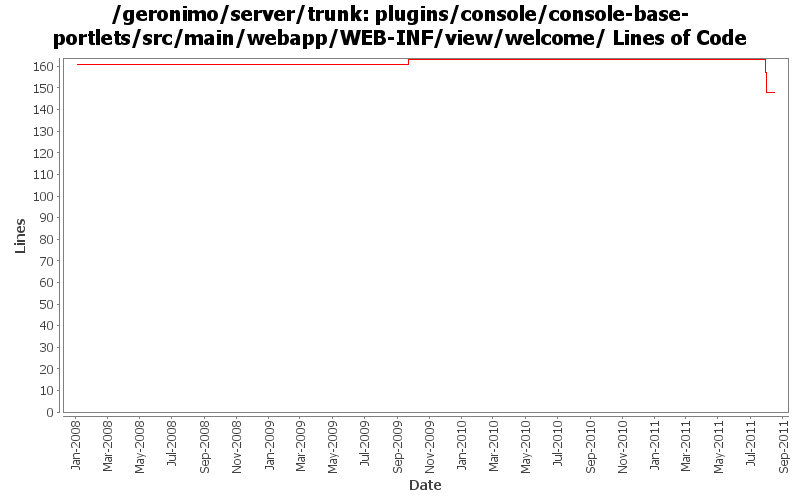

[root]/plugins/console/console-base-portlets/src/main/webapp/WEB-INF/view/welcome

| Author | Changes | Lines of Code | Lines per Change |
|---|---|---|---|
| Totals | 17 (100.0%) | 61 (100.0%) | 3.5 |
| rwonly | 4 (23.5%) | 45 (73.8%) | 11.2 |
| genspring | 4 (23.5%) | 9 (14.8%) | 2.2 |
| dwoods | 7 (41.2%) | 4 (6.6%) | 0.5 |
| djencks | 1 (5.9%) | 2 (3.3%) | 2.0 |
| rickmcguire | 1 (5.9%) | 1 (1.6%) | 1.0 |
some console ui fixes.
3 lines of code changed in 1 file:
GERONIMO-6091 Links of Common Console Actions are incorrect(thanks Fang Shenghao for the patch!)
2 lines of code changed in 1 file:
GERONIMO-6059 New look and feel of Geronimo 3.0 admin console (Step 2, New UI design)
16 lines of code changed in 1 file:
GERONIMO-6059 New look and feel of Geronimo 3.0 admin console (Step 1)
24 lines of code changed in 1 file:
update the deployer link in welcome page.
1 lines of code changed in 1 file:
Updated the links and description for some portlet links.
3 lines of code changed in 1 file:
update copyrights in jsps
1 lines of code changed in 1 file:
GERONIMO-4994 To support multiple level navigation tree in geronimo web console.
3 lines of code changed in 1 file:
GERONIMO-4823 role-based administration capabilities
2 lines of code changed in 1 file:
updated displayed copyright dates for 2009
1 lines of code changed in 1 file:
GERONIMO-4474 Pull out the text in the JSP files to resource bundle files. Patches provided by Gang Yin.
2 lines of code changed in 1 file:
update Copyright year in welcome portlet from 2007 to 2008
1 lines of code changed in 1 file:
fix console welcome page typos
2 lines of code changed in 1 file:
GERONIMO-1775 Internationalization of the Admin Console. First patch from YunFeng.
0 lines of code changed in 4 files: